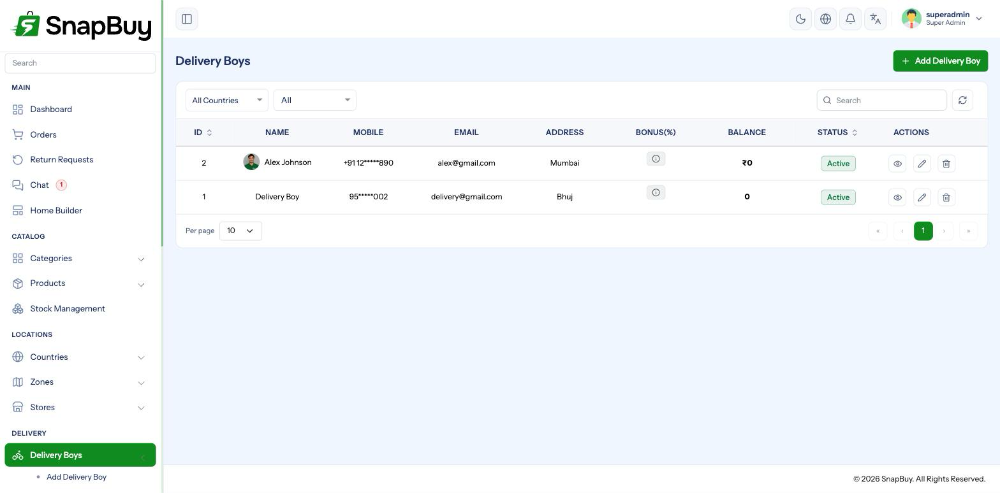

Delivery Boys & Their Portal
Menu paths: Delivery Boys, Registered Delivery Boys
Riders get their own web portal, separate from the admin panel, at:
https://admin.yourstore.com/delivery_boy/loginThey can also self-register at /delivery_boy/register.

Two ways a rider gets an account
| Route | Where it appears |
|---|---|
| You create it — Delivery Boys → Add | Active immediately |
They self-register at /delivery_boy/register | Registered Delivery Boys, awaiting approval |
Review self-registrations before approving
Anyone who finds the registration URL can apply. Approving an account gives that person access to customer names, addresses and phone numbers, and lets them collect cash on your behalf.
Verify identity and right to work before approving. Check Registered Delivery Boys regularly — an unreviewed queue is a security gap, not an inbox.
What a rider sees in their portal
| Section | What they can do |
|---|---|
| Dashboard | Their assigned work at a glance |
| Orders | Advance assigned orders through the statuses they are allowed |
| Return Requests | Collect returns from customers |
| Chat | Message the customer and admin |
| Cash Collection | Cash they have taken on COD orders |
| Salary Transactions | What they have been paid |
| Settlement History | Reconciliation of cash against earnings |
| Withdrawal Requests | Request a payout |
| Notification Panel | Their notifications |
| Profile / Account Settings | Their own details |
What riders cannot do
The rider portal is deliberately narrow
Riders only see their own assigned orders, and can only move a status within a restricted set:
- Quick orders — Ready for Pickup → Picked Up → Out For Delivery → Delivered
- eCommerce orders — Out For Delivery → Delivered
They cannot mark an order Received, cancel it, edit prices, see other riders' work, or reach any admin settings.
Never grant admin permissions to the Delivery Boy role
It changes what riders see in their own portal and can expose customer and financial data on a device that is frequently lost, shared or sold. See Roles & Permissions.
Assigning work
Orders are assigned from the admin panel — see Orders Workflow. On assignment the rider is notified by push.
Riders are not told about work without cron and Firebase
Assignment notifications are queued jobs delivered through Firebase. If either is missing, the order appears in the portal but the rider is never alerted — and in practice, never picks it up. Check Cron Jobs and Firebase.
Money
Three separate flows, covered in full under Wallet, Withdrawals & Settlements:
| Flow | Direction |
|---|---|
| Cash collection | Customer cash held by the rider — they owe you |
| Salary | What you pay them |
| Withdrawals | Payout of their balance |
Settle cash before approving a payout
A rider can be holding days of COD cash while requesting a withdrawal of their earnings. Approving without settling means paying twice.
Bonuses are configured in App Settings — always set a maximum on percentage bonuses.
Deactivating a rider
Set the account inactive. They can no longer sign in or receive assignments, while their history stays intact. account_status_delivery_boy notifies them.
Settle before deactivating
Once an account is inactive, the rider cannot see their own settlement history to agree the figures with you. Reconcile cash and pay any balance owed first, then deactivate.
Reassign their live orders
Deactivating a rider with orders out for delivery leaves those orders stranded — no one can advance them. Reassign first.
The Delivery Boy App
Riders normally work from the mobile app rather than the web portal. Its setup is documented separately:
The portal and the app show the same data — the portal is useful when a phone is lost or a rider needs a desktop view.
Troubleshooting
| Symptom | Cause | Fix |
|---|---|---|
| Rider cannot sign in | Self-registration not approved, or account inactive | Approve in Registered Delivery Boys; check status |
| Rider not alerted to new orders | Cron or Firebase missing | Check Cron Jobs, Firebase |
| Rider cannot advance a status | Outside their permitted set | Move it from the admin panel |
| Rider sees no orders | None assigned to them | Assign from the order |
| Cash figures disputed | Not settled recently | Reconcile in Settlement History |
| Orders stuck after deactivating a rider | Not reassigned | Reassign to an active rider |
| Payout request unnoticed | Admin notification disabled | Enable withdrawal_request_admin |